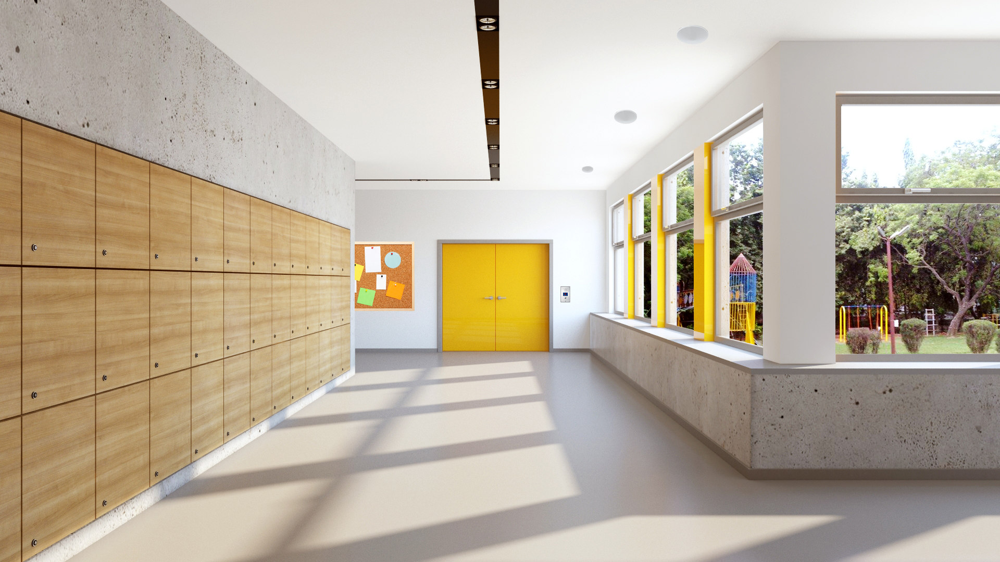

<div class="demo-carousel" [style.height]="parentHeight">
    <mat-carousel
      #matCarousel
      [timings]="timings"
      [autoplay]="autoplay"
      [interval]="interval"
      [loop]="loop"
      [hideArrows]="hideArrows"
      [hideIndicators]="hideIndicators"
      [color]="color"
      [maxWidth]="maxWidth"
      [proportion]="proportion"
      [useKeyboard]="useKeyboard"
      [useMouseWheel]="useMouseWheel"
      [orientation]="orientation"
      [slides]="slides"
      [maintainAspectRatio]="maintainAspectRatio"
      [slideHeight]="slideHeight"
      
      >
      
      <mat-carousel-slide class="demo-carousel-slide"
        #matCarouselSlide
        
        *ngFor="let images of imagesList; let i = index"
        [image]="images.image"
        [overlayColor]="overlayColor"
        [hideOverlay]="hideOverlay"
      >
        <ng-container *ngIf="showContent">
          <div
            style="width: 100%; height: 100%; display: flex; flex-direction: column; align-items: center; justify-content: center"
          >
            <h1>{{ i+1 }}</h1>
            <p>disabled: {{ matCarouselSlide.disabled }}</p>
            <a routerLink='/International'><button
              mat-flat-button
              (click)="
                matCarouselSlide.disabled = !matCarouselSlide.disabled
              "
            >
              Click me!
            </button></a>
          </div>
        </ng-container>
      </mat-carousel-slide>
    </mat-carousel>
  </div>
  
  
  
  
  